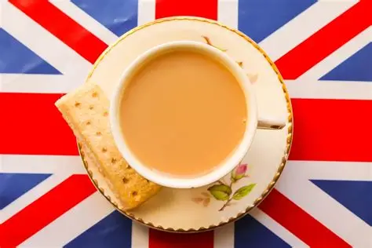
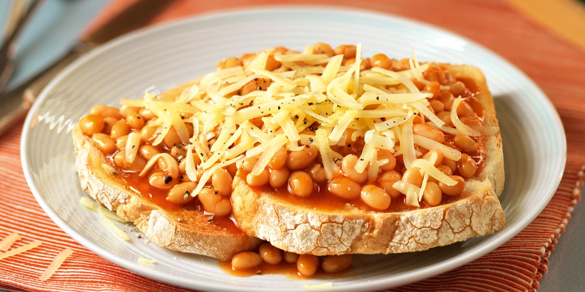
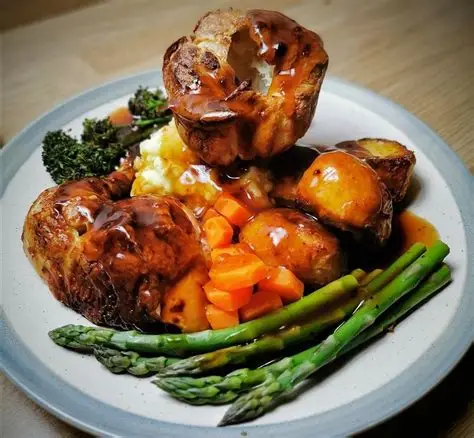
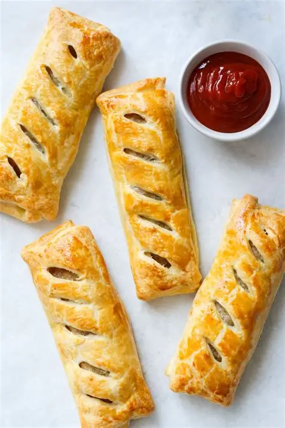
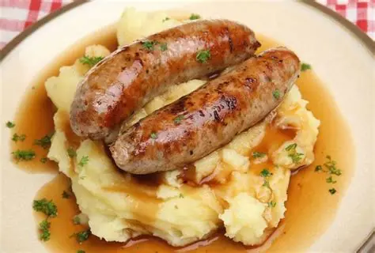
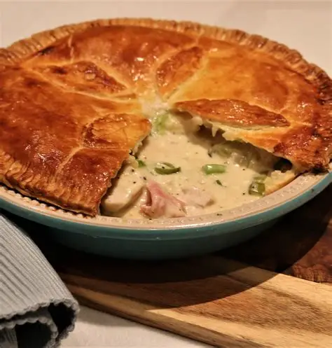
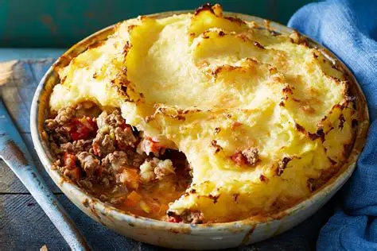
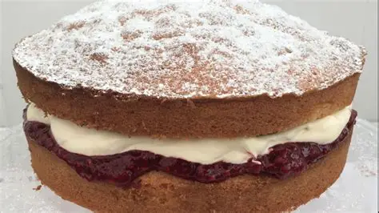
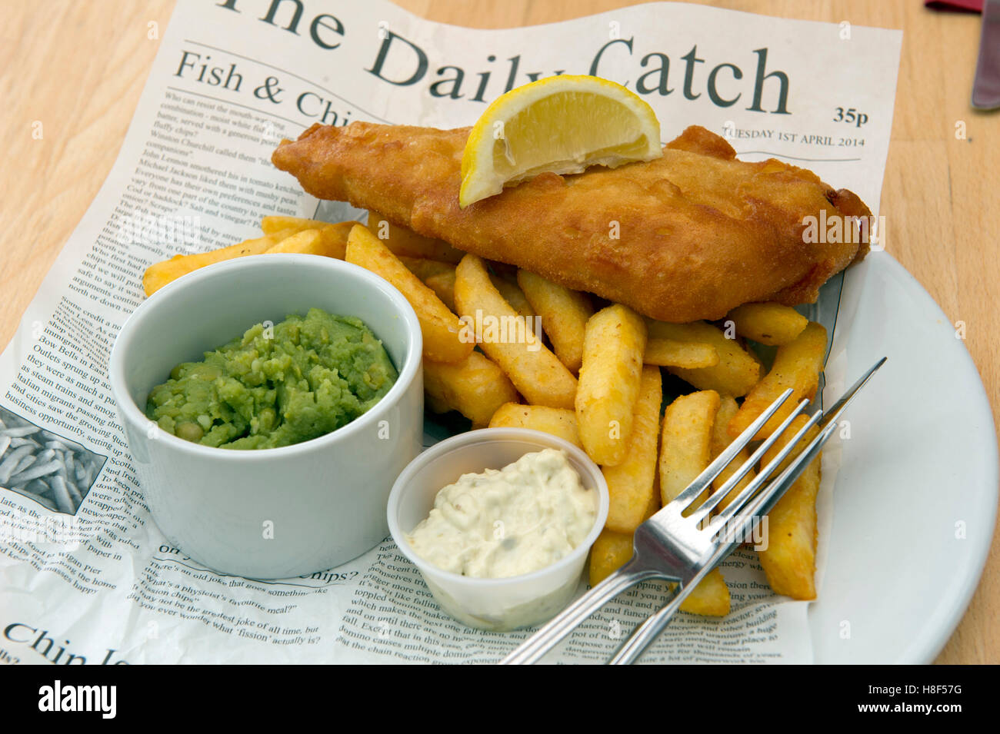

'A cuppa'
Acceptable in any scenario. Instant fix for a bad mood. Just a generally succulent beverage.
Beans on toast
Optional cheese. On a disgustingly buttery piece of sourdough its a dream.
Sunday lunch (roast)
A classic. Chicken, roast potatoes, pigs in blankets, carrots, spinach, gravy. MMMMM.
Sausage rolls
A go-to. Either as a snack or part of a meal they never fail to make me happy (unless they have nuts in them).
Bangers and mash
With some steaming gravy. Bit of a comfort meal.
Chicken Pie
Got to have both wholegrain mustard and ketchup to make it worthwhile.
Cottage/Shepherd's Pie
Another comfort meal. Again, ketchup is a must have.
Victoria sponge cake
Only this low because often the cream to jam ratio isn't right. Ya gotta be heavy on the jam and icing sugar on the top.
Fish and chips
Don't actually love fish but when it's good it's SO good.
Scone
Not sure how I feel about scones. Again, you've got to get the jam to cream ratio right otherwise they're too dry. But it's a no no if they have raisins.